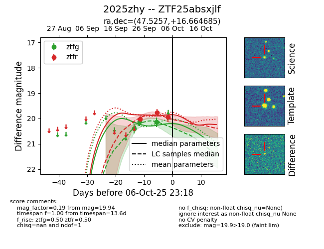
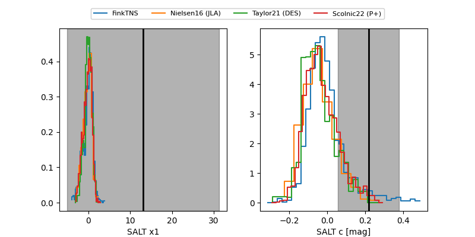

FINK: ZTF25absxjlf
Lasair: ZTF25absxjlf
ALeRCE: ZTF25absxjlf
TNS: 2025zhy
YSE: 2025zhy
ZTF25absxjlf (ztf,fink)
2025zhy (tns,yse)
equatorial (ra, dec) = (47.5257,+16.66468)
galactic (l, b) = (164.4964,-34.78444)


last ztfg=20.14, ztfr=19.94
3 ztfg, 3 ztfr detections